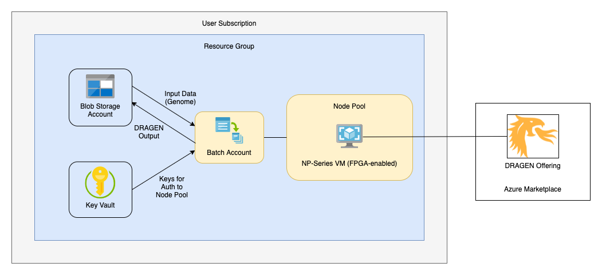

DRAGEN on Azure is available in regions where FPGA-enabled Standard NP Family VMs are available. Supported regions currently include:

List of Azure resources that are deployed by this quickstart if default settings and parameters are used:
DRAGEN runs on FPGA-enabled VMs, which are now generally available as the NP-series on Azure. In order to enable access to these VM SKUs by Batch service, users will need to contact support to request a quota. This applies to both user subscription and batch managed job pools.
All users who deploy DRAGEN through Batch service will need to request a quota for the NP-series VM SKU by submitting a support request. In your Batch account in the Azure portal, go to the “Quotas” tab and use the button labeled “Request quota increase” to start a new request.
Depending on the user’s workflow, it may also be necessary to request an increase in quota for Batch accounts. Current default quotas for Batch accounts can be found here.
If you need to increase your Batch account quota, see this page for more information on creating a support request.
Batch offers two options for allocation of node pools: Batch managed and user subscription modes.
When Batch Managed allocation mode is selected, users must request NP VM quota for each specific Batch instance they create. Nodes are allocated as needed from Batch-managed subscriptions. This scenario works best when users intend to persist and use one or very few Batch instances for their DRAGEN jobs. It is less ideal in situations where the creation/deletion of Batch accounts is automated or occurs frequently, as with CI/CD.
When the User Subscription allocation mode is selected, users request an overall quota for NP VMs for a region within their subscription. With this model, the VMs needed for the Batch account are created directly in the user’s subscription. This setup is useful for CI/CD and other cases where users are running DRAGEN across many Batch accounts within a subscription and/or the Batch accounts are short-lived.
There may be cost differences between the two different node pool allocation methods. Consider your usage scenarios and consult Azure documentation and pricing calculators to determine which approach will be most optimal for your needs.
Users are responsible for costs of any services deployed through this quickstart or its customization options.
Prices are subject to change - more information can be found on the pricing pages for Azure resources deployed through this tutorial:
Users are also responsible for costs of any licenses needed to run DRAGEN (not included in this quickstart - must be obtained separately).
For help in estimating your costs to run DRAGEN on Azure, see the pricing calculator located here.